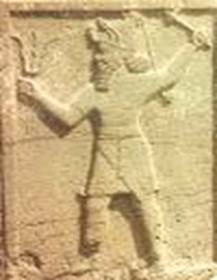
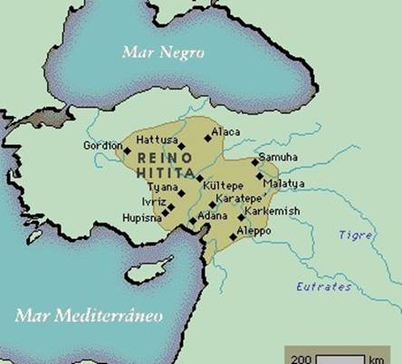
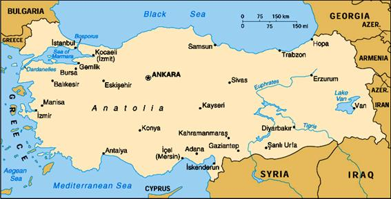
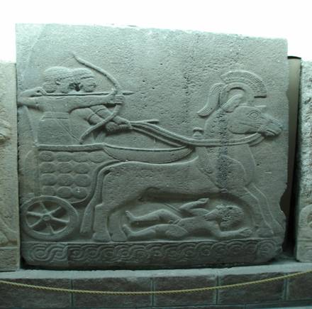
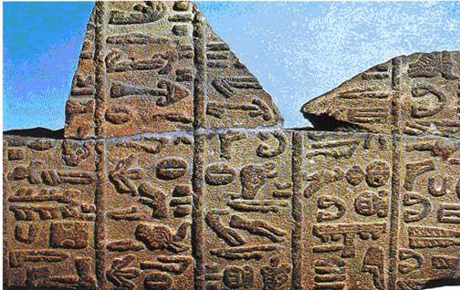
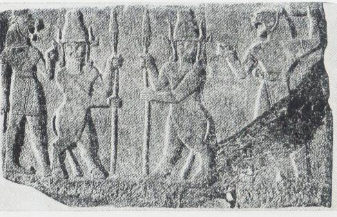
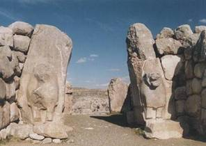
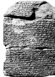
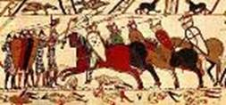

|
|
Hititas
por Maria Carolina de Vasconcelos
Mathusalem

Guerreiro hitita
Esta � a historia de um povo que permaneceu nas trevas por tr�s
mil anos. E at� hoje s� se sabe um pouco de sua incr�vel
historia.

Mapa antigo

Mapa atual - Turquia
Hattusa era a capital do reino Hitita. O reinado originou-se de
migra��es indo-europ�ias sobre a Anat�lia, subjugando os nativos. Em
sua extens�o m�xima o imp�rio Hitita compreendia a Anat�lia, o norte
e o oeste da Mesopot�mia at� a Palestina.
Banhada pelo
Mediterr�neo e pelo Mar Negro. Apresenta um relevo acidentado,
dividindo-a em v�rios compartimentos, vale e bacias isolados. �
oeste e � norte, as regi�es costeiras s�o f�rteis e possuem um bom
fluxo de �gua pluvial. Seu interior � composto de cordilheiras, com
deserto e um lago salgado ao centro. As condi��es de fertilidade
variam muito de uma parte a outra da pen�nsula.
Economia
Os hititas desenvolveram uma civiliza��o baseada na agricultura,
com�rcio, minera��o (principalmente de ferro) e artesanato. Estas
eram as atividades principais da economia hitita. Realizavam
com�rcio com o Oriente Pr�ximo, sendo pioneiros na metalurgia do
ferro.
Cultura
No aspecto cultural podemos destacar a escrita hitita,
baseada em representa��es pictogr�ficas (desenhos). Sua principal
arma eram os temidos carros de guerra com capacidade para tr�s
pessoas (um condutor e dois guerreiros ,geralmente um utilizando um
arco) uma inova��o frente aos carros de duas pessoas utilizadas
tradicionalmente pelos seus vizinhos.

Al�m desta escrita hierogl�fica, os hititas tamb�m possu�am
um tipo de escrita cuneiforme.

Inscri��es hierogl�ficas dos hititas
Era uma escrita bem difundida, que foi muito dif�cil de ser
traduzida, os livros dizem que levou mais de vinte e seis anos para
conseguir fazer a tradu��o.
Assim como v�rios povos da
antiguidade, os hititas seguiam o polite�smo (acreditavam em v�rias
divindades). Eram conhecidos como �o povo dos mil deuses�, pelo
simples fato de quando dominavam uma regi�o eles adotavam as suas
cren�as para si. Os deuses hititas estavam relacionados aos diversos
aspectos da natureza (vento, �gua, chuva, terra, etc). Os cavalos
eram venerados como animais nobres. Seus governantes era um
rei-sacerdote e o clero tinha grande influ�ncia. O deus principal
era Teshub o deus da tempestade, �s vezes montado em um touro. Outra
divindade era a deusa-m�e, a �deusa de estado�, a �deusa do sol de
Ariana� a rainha da terra hitita. Ela era a mulher do rei da
tempestade, e pais de Telipinus que � o respons�vel pelas colheitas.
Seu emblema era o le�o sobre o qual divindades representando regi�es
favorecidas e for�as da natureza.

Dem�nios da mitologia hitita

As portas dos Le�es de Hattusas, uma das quatro entradas da
cidade, � um testemunho monumental da cidade melhor fortificada da
antiguidade. Os arcos duplos da porta est�o entre muros cicl�picos
geralmente de oito metros, ladeados por torres.
Organiza��o
O rei hitita era chefe do ex�rcito, juiz supremo e sacerdote.
As rainhas dispunham de certo poder. A id�ia de sucess�o heredit�ria
parece ter nascido com o Rei Telipinus, o qual teria criado uma
esp�cie de monarquia constitucional: a sucess�o atrav�s do herdeiro
masculino era estabelecida pela lei. Mas o direito de julgar o
pr�prio rei era dado pelo, Pankus, o conc�lio dos nobres. Esse
conc�lio podia emitir uma advert�ncia, se suspeitasse de ter o rei
inten��es contra a vida de qualquer de seus familiares, podia at�
decretar a pena de morte contra o rei, se houvesse prova de que este
realmente assassinaria qualquer de seus familiares.
Os
encarregados de cuidar dos cavalos assumiam notoriedade na sociedade
hitita.
O grande imp�rio e sua historia
A Batalha de Kadesh � o evento mais famoso da hist�ria
hitita, quando o Principe Hattusilis, tio do Rei Muwatallis atacou
de assalto o ex�rcito de Rams�s II do Egito nas proximidades da
cidade de Kadesh. A dram�tica batalha (segundo relatos eg�pcios, o
pr�prio fara� precisou usar a espada para salvar sua vida) terminou
sem vencedores, mas ambos os lados reividicaram a vit�ria. A batalha
� ricamente detalhada em escrituras eg�pcias, e a descoberta dos
s�tios hititas na Turquia confirmaram o trunfo hitita contra o
Egito.
tratado de paz
Rams�s II � quem fez a alian�a de paz com os hititas,
deixando um vazio pol�tico na Palestina. Sob a XX dinastia, a �ltima
do reino novo, os hititas v�o progressivamente perdendo toda a sua
influ�ncia na �sia.
Em 1334 a. C., seus dom�nios compreendiam 675
mil quil�metros quadrados, indo do mar Egeu �s montanhas do L�bano,
ao sul, e at� as cabeceiras do Eufrates, a leste.
Depois da
Batalha de Kadesh, os hititas se envolveram em uma guerra civil que
esfacelou o imp�rio. Logo ap�s a guerra, os hititas incendiaram
Hattussa e fugiram para uma regi�o desconhecida. At� hoje n�o se
sabe qual foi o destino dos hititas. O imo do poderio hitita, bem
como seu brio, havia sido deixado de lado quando as cidades mais
poderosas de seu imp�rio foram devastadas em guerras civis e
abandonadas por seu pr�prio povo, os hititas que antes nunca haviam
sofrido uma derrota, tornaram-se alvo f�cil para os povos do mar,
sem suas capitais b�licas, o restante do imp�rio foi devastado por
indo-europeus, conhecidos como povos do mar.
Os hititas tamb�m
venceram outras grandes batalhas, e eram grandes inimigos dos
gregos. Durante o apogeu do imp�rio, os hititas saquearam a
cidade-estado da Babil�nia, arrebataram cidades dos hurritas, e
Alepo do Egito.
 saque dos hititas na
Babil�nia
Na �sia menor, n�o havia povo t�o evolu�do quanto os
hititas que, em sua cultura, assimilaram a tudo dos antigos povos
que ali viviam, conhecidos como seus ancestrais, os hattis, bem como
mantinham grande comunh�o com Tr�ia, cidade na qual alguns
estudiosos afirmam que, na �poca, pagava tributo a suserania
hitita.
Por�m, por volta de 1200 a.C, os hititas foram dominados
pelos aqueus.
A import�ncia desta civiliza��o reside no fato de
ter sido ela que nos legou os mais antigos documentos escritos numa
l�ngua indo-europ�ia (l�ngua que deu origem a maior parte das
l�nguas faladas na Europa) at� hoje descobertos. A maior parte dos
textos que tratavam de hist�ria, de pol�tica,de legisla��o, de
literatura e de religi�o, eram gravados em cuneiforme sobre
tabelinhas de argila |